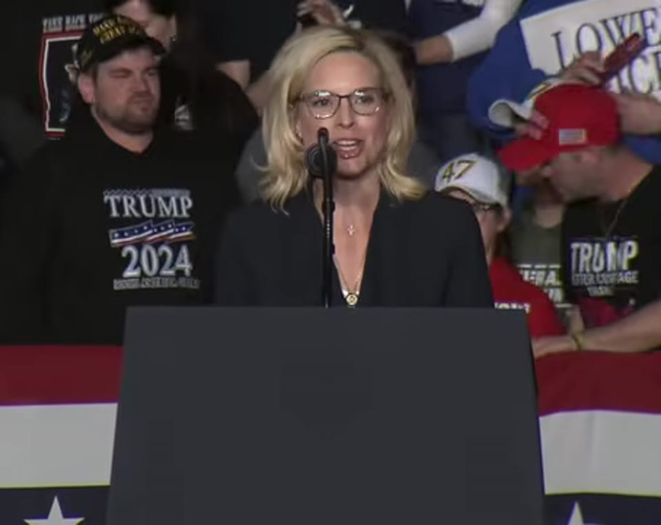
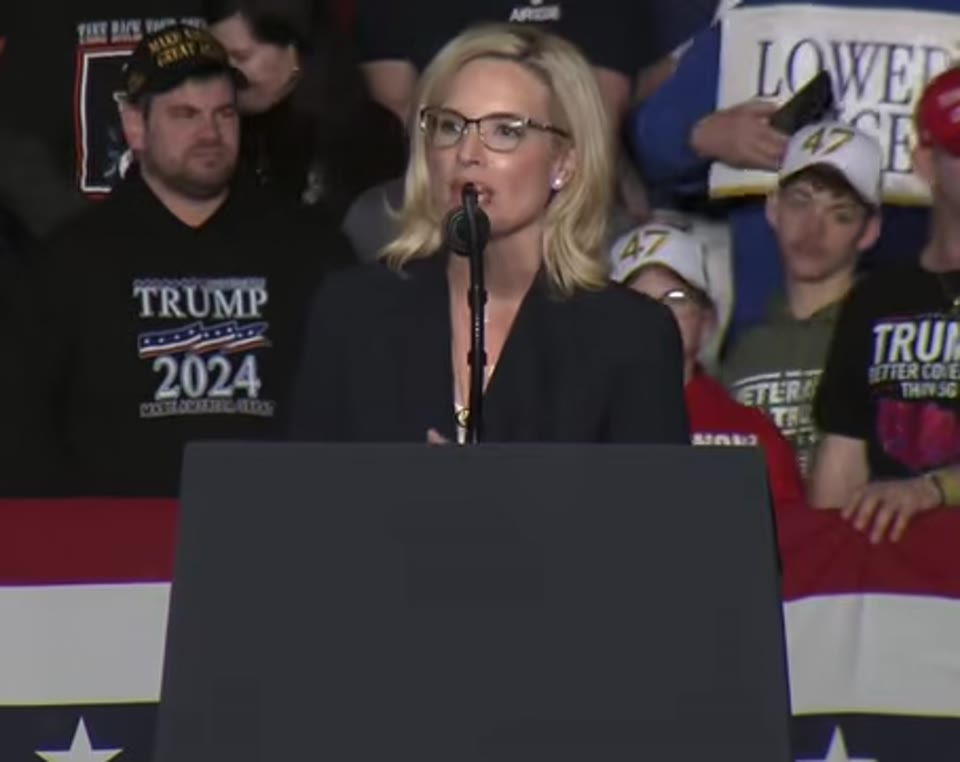
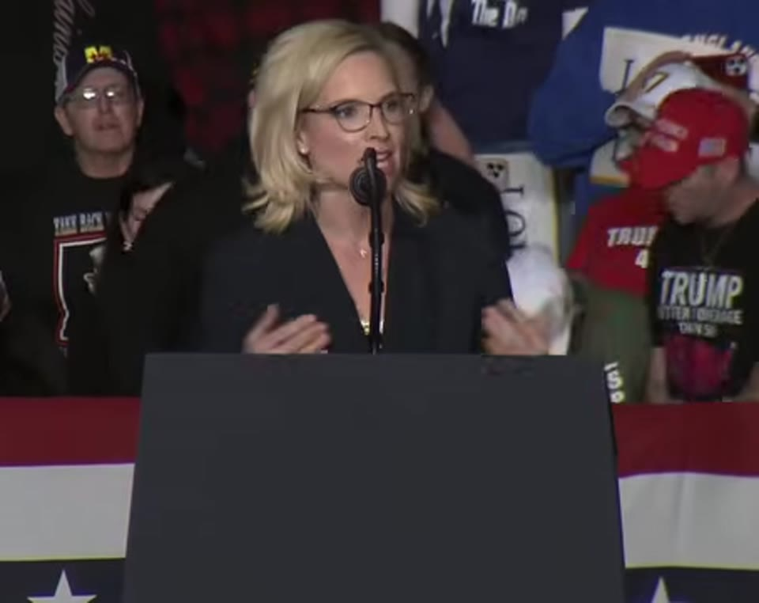
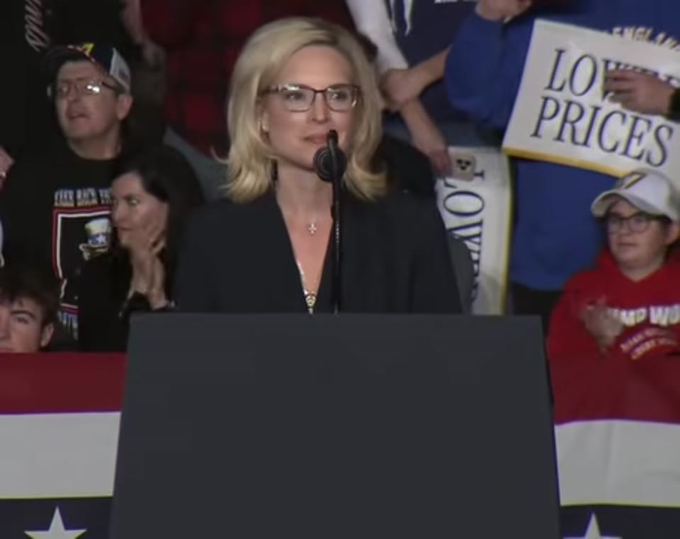
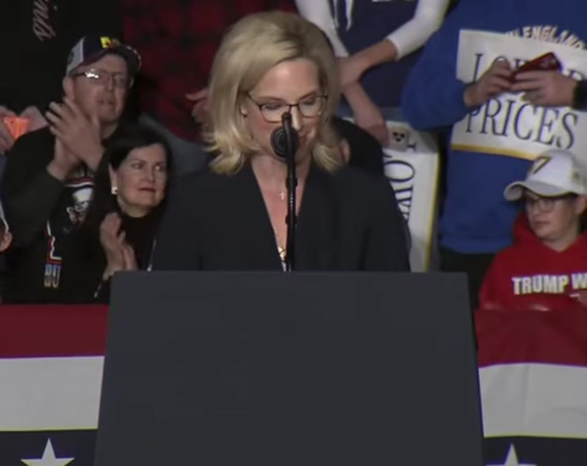
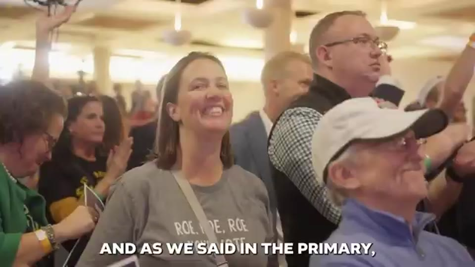

视频 / Video
视频来源 / Video sources
Ashley Hinson shares Remarks at President Trump’s Rally in Clive, Iowa
Ashley Hinson · 20260203 · 209s · 12/12 frames with faces
Josh Turek Victory Speech
Josh Turek · 20261104 · 101s · 19/19 frames with faces
Josh Turek wins Democratic primary for Iowa senate seat
NBC News · 20260603 · 113s · 6/6 frames with faces
关键帧与人脸识别 / Keyframes and face identity
IA_hinson_trump





IA_turek_victory_short
